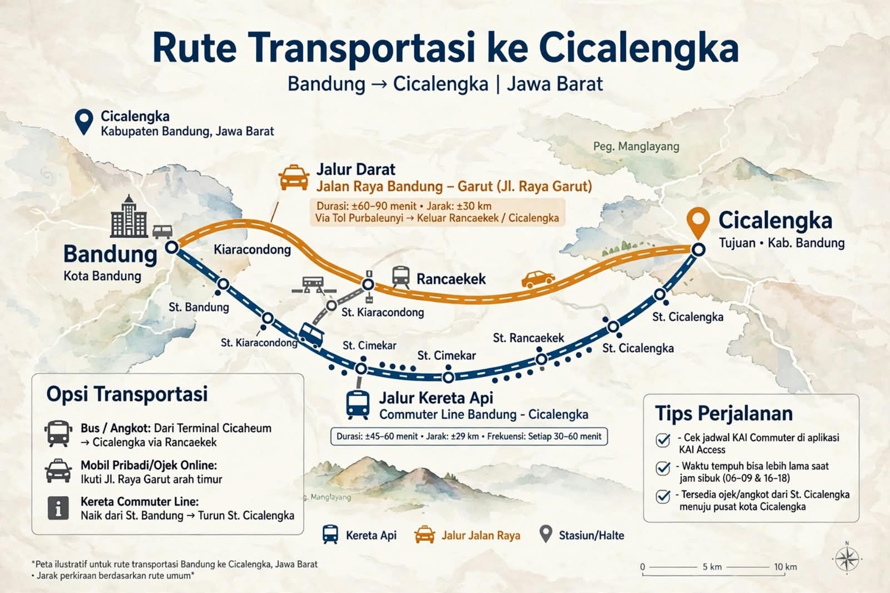

Panduan Lengkap Akses dan Transportasi ke Cicalengka, Kabupaten Bandung

Cicalengka merupakan salah satu kecamatan penting di wilayah Bandung Timur, Kabupaten Bandung, yang menjadi gerbang penghubung utama antara Kota Bandung dengan kawasan Priangan Timur seperti Garut, Tasikmalaya, hingga Ciamis. Karena letaknya yang strategis di jalur utama selatan Jawa Barat, akses menuju Cicalengka tergolong sangat mudah dijangkau baik menggunakan transportasi umum maupun kendaraan pribadi.
Bagi Anda yang berencana berkunjung ke Cicalengka—baik untuk urusan pekerjaan, belanja ke sentra konveksi, berwisata ke Curug Cinulang dan Kareumbi, maupun singgah di jalur selatan—berikut panduan lengkap pilihan transportasi dan rutenya.
1. Naik Kereta Api Commuter Line Bandung Raya (Paling Praktis & Bebas Macet)
Moda transportasi favorit warga Bandung maupun wisatawan dari luar kota menuju Cicalengka adalah Commuter Line Bandung Raya (KA Lokal Bandung Raya) yang dikelola oleh KAI Commuter. Stasiun Cicalengka menjadi stasiun ujung timur untuk layanan kereta komuter lokal di koridor Padalarang – Bandung – Cicalengka.
- Rute & Stasiun Pemberhentian: Melayani perjalanan dari arah Padalarang, Cimahi, Stasiun Bandung (Hall), Cikudapateuh, Kiaracondong, Gedebage, Cimekar, Rancaekek, Haurpugur, hingga tiba di Stasiun Cicalengka.
- Estimasi Waktu Tempuh: Dari Stasiun Bandung menuju Stasiun Cicalengka memakan waktu sekitar 45–60 menit, jauh lebih cepat dan terukur dibanding melewati jalur arteri saat jam sibuk.
- Tarif Tiket: Sangat terjangkau, sekitar Rp5.000 sekali jalan (dapat dipesan melalui aplikasi Access by KAI atau menggunakan Kartu Multi Trip / uang elektronik).
- Koneksi dari Luar Kota: Penumpang Kereta Cepat Whoosh dari Jakarta bisa turun di Stasiun Padalarang, lalu menyambung langsung menggunakan KA Feeder menuju Stasiun Bandung dan melanjutkan perjalanan dengan Commuter Line Bandung Raya ke Cicalengka.
2. Transportasi Umum Jalan Raya (Bus AKDP, Elf, dan Angkot)
Selain kereta api, Cicalengka dilalui langsung oleh jalur nasional Bandung – Garut – Tasikmalaya sehingga pilihan angkutan jalan rayanya beroperasi hampir 24 jam.
- Bus Antarkota (AKDP): Dari Terminal Cicaheum maupun Terminal Leuwipanjang Bandung, tersedia banyak bus jurusan Garut, Singaparna, Tasikmalaya, Banjar, atau Pangandaran yang melintasi Jalan Raya Cicalengka. Anda bisa meminta turun di pertigaan Cicalengka, Alun-Alun Cicalengka, atau kawasan By Pass Cicalengka.
- Minibus / Elf Jalur Selatan: Elf jurusan Bandung – Garut atau Bandung – Limbangan/Malangbong dari area Cicaheum dan Cileunyi juga rutin melintas di jalur utama Cicalengka dengan frekuensi keberangkatan yang rapat.
- Angkutan Kota (Angkot) Lokal: Setibanya di Stasiun Cicalengka atau Alun-Alun Cicalengka, tersedia angkot trayek lokal yang menghubungkan ke Rancaekek, Majalaya, Cikancung, Nagreg, hingga arah Curug Cinulang.
3. Akses Kendaraan Pribadi (Mobil & Motor)
Bagi pengguna kendaraan pribadi dari arah Jakarta, Purwakarta, atau pusat Kota Bandung, tersedia dua pilihan jalur utama yang nyaman:
- Lewat Jalan Tol (Padaleunyi / Cisumdawu): Ambil arah keluar di Gerbang Tol Cileunyi. Dari exit tol Cileunyi, arahkan kendaraan ke timur melalui Jalan Raya Rancaekek – Cicalengka (sekitar 15–17 km atau 30–45 menit perjalanan tergantung kepadatan lalu lintas kawasan industri Rancaekek).
- Jalur Arteri Dalam Kota: Dari pusat Kota Bandung, Anda bisa melintas melalui Jalan Soekarno-Hatta menuju Bundaran Cibiru, lalu terus ke arah Cileunyi, Rancaekek, hingga masuk ke kawasan Cicalengka.
- Jalur Lingkar Nagreg / By Pass Cicalengka: Untuk pengendara yang hendak meneruskan perjalanan ke arah Garut atau Tasikmalaya tanpa masuk ke pusat keramaian pasar/alun-alun, tersedia jalur By Pass Cicalengka yang lebar dan langsung terhubung ke tanjakan Lingkar Nagreg.
Kesimpulan
Dengan dukungan Stasiun Cicalengka sebagai titik ujung Commuter Line Bandung Raya serta akses jalan nasional yang terhubung langsung dengan Gerbang Tol Cileunyi, perjalanan menuju Cicalengka kini semakin mudah, murah, dan fleksibel. Anda tinggal menyesuaikan pilihan moda transportasi dengan titik keberangkatan dan kebutuhan aktivitas selama berada di kawasan Bandung Timur.